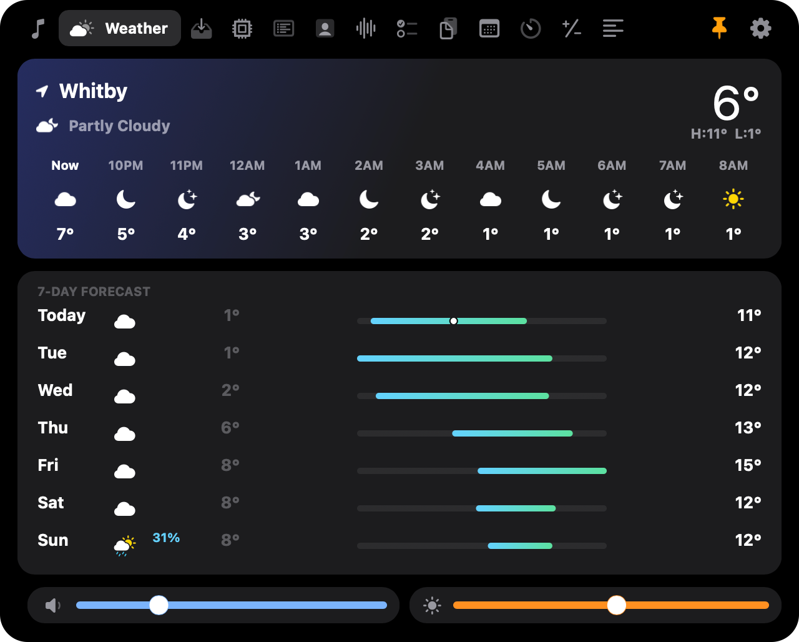

Notcho
Your MacBook notch, piled high.
Notcho Notcho Man!
We got all the “fixins”.
Now Playing
Weather
File Tray
Timer
+ 11 more

Your MacBook notch, piled high.
Notcho Notcho Man!
We got all the “fixins”.